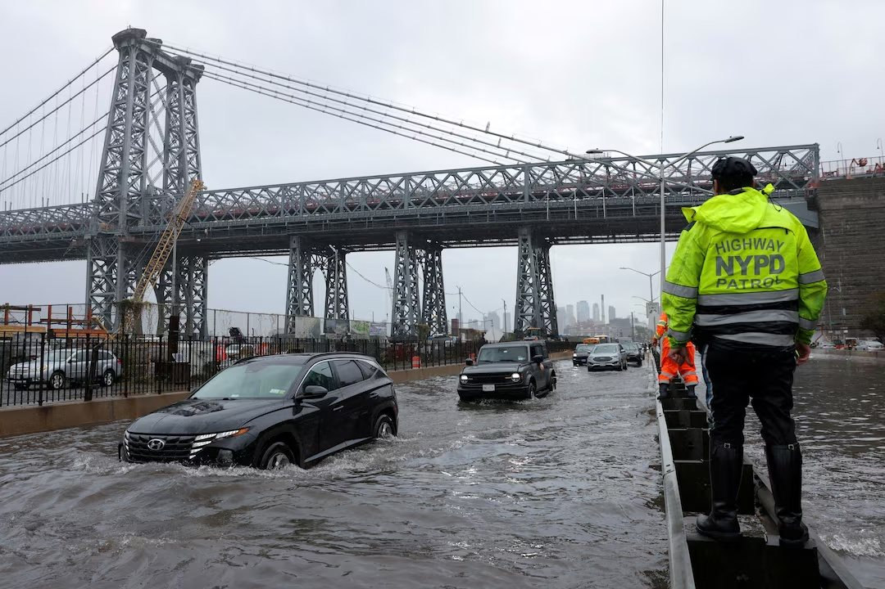

01｜
强劲东北风暴袭击纽约，州长宣布进入紧急状态
强劲东北风暴周六持续影响纽约地区，纽约州长霍楚宣布纽约市、长岛及威彻斯特县进入紧急状态。风暴带来强风、暴雨和沿海洪水风险，部分地区阵风可能达到50英里/小时，局部降雨量最高可能达到3英寸。受满月高潮影响，纽约及长岛沿海地区面临更高的潮汐洪水风险。原定周六在中央公园举行的Global Citizen Festival也因恶劣天气取消。
来源｜路透社

图｜东北风暴影响纽约，街道出现积水。图片来源｜REUTERS观察｜
这次风暴真正值得关注的不是单一的降雨量，而是强风、高潮、沿海洪水和停电风险同时出现。对纽约居民和商户而言，周末安排不能只看“下不下雨”，更要关注所在区域是否靠近海岸、是否容易停电，以及交通系统是否出现临时调整。
02｜
纽约三大机场大面积延误，拉瓜迪亚近六成航班受影响
东北风暴对纽约航空交通造成明显冲击。周六拉瓜迪亚机场约600个航班出现延误，接近当天航班总量的六成；肯尼迪国际机场同样出现不同程度延误。受强风影响，MTA同时对部分桥梁和隧道实施空载拖挂车及串联卡车限制，并持续监控地铁、铁路及公交系统运行状况。
来源｜美联社
观察｜
对周末出行的纽约居民来说，最大的风险不是航班直接取消，而是延误不断向后累积。即使航班仍显示“正常”，前往机场前也应重新确认实时状态，并为地面交通和安检预留更多时间。
03｜
纽约市议会通过J-51改革，部分公寓和合作公寓可获税收减免
纽约市议会通过J-51税收优惠改革法案 Int. 1015-A，扩大符合条件的住宅物业进行重大维修和改造时获得房产税减免的机会。新方案将部分符合条件的合作公寓和共有公寓纳入适用范围，并设置每套住宅6万美元的评估价值门槛，该标准未来可随通胀调整。符合条件的项目最长可获得20年优惠，税收减免最高可覆盖合理工程成本的100%。市议会预计，全市约30万套住宅可能因此获得参与机会。
来源｜纽约市议会
观察｜
这项改革的重要性不只是“减税”，而是改变老旧住宅楼进行大修时的成本结构。对纽约大量华人自住业主、合作公寓住户和小型房东而言，真正需要关注的是自己的楼宇是否符合资格，以及屋顶、电梯、外墙、管线等未来必须进行的大型工程能否进入优惠范围。
04｜
纽约房东起诉租金指导委员会，挑战两年租金冻结
纽约房东团体起诉纽约市租金指导委员会，指控市长马姆达尼对委员会决策进行了不当干预，挑战即将实施的两年租金冻结政策。法官已要求相关方面提交与租金决定有关的通讯记录。按照目前安排，相关租金政策预计10月1日起实施。
来源｜Gothamist
观察｜
对租客和房东而言，现在最重要的不是诉讼双方如何表态，而是法院是否会在10月1日前采取进一步行动。在没有新的法院命令之前，租客和房东都不应把“已经起诉”理解为政策已经暂停。


评论
你今天最关注哪一条？